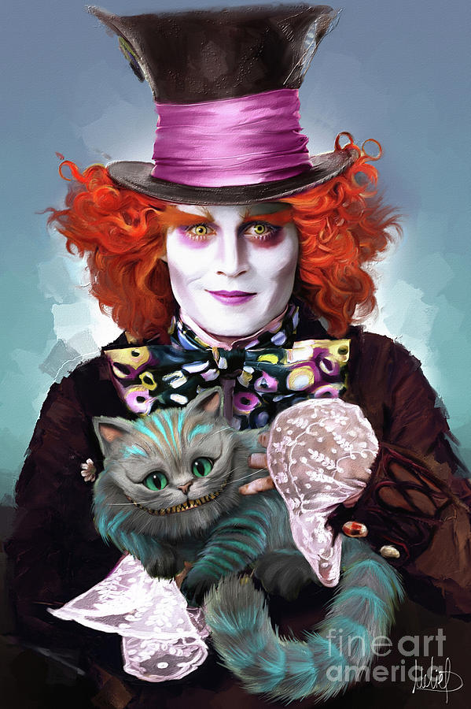

THE MEDIATOR

Mediator personalities are true idealists, always looking for the hint of good in even the worst of people and events, searching for ways to make things better. While they may be perceived as calm, reserved, or even shy, Mediators have an inner flame and passion that can truly shine. Comprising just 4% of the population, the risk of feeling misunderstood is unfortunately high for the Mediator personality type – but when they find like-minded people to spend their time with, the harmony they feel will be a fountain of joy and inspiration.
Strengths and Weaknesses
- Idealistic
- Seek and Value Harmony
- Open-Minded and Flexible
- Very Creative
- Passionate adn Energetic
- Dedicated and Hard-Working
- Too Idealistic
- Too Altruistic
- Impractical
- Dislike Dealing With Data
- Take Things Personally
- Difficult to Get to Know
- Do Better 1 on 1 and small grounps
- Enjoy abstract thinking and discussions most might call "...nerdy..."
- Like abstract thinking and learning by comparison to something simple
- I'm quiet
- Sidetrack, chase the rabbit hole
- J.R.R. Tolkien
- Hellen Keller
- Derek Jeter
- Ronnie James Dio